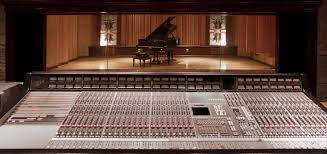
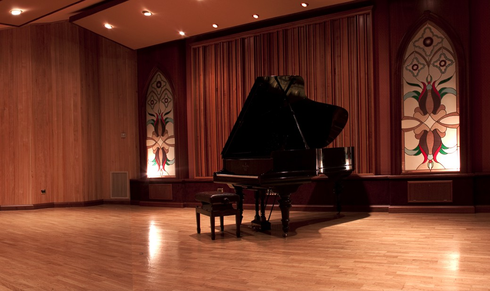
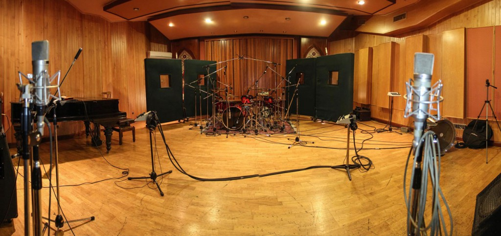

Nuestro estudio de grabación A fue diseñado por la Arq. Susana Hechtenthal, cuenta con un control room de mas de 70m cuadrados, su diseño acústico y su monitoreo fue realizado por el reconocido GEORGE AUGSPURGER como así también la gran sala de grabación y las salas de aislación, todo finamente decorado. Asimismo posee un muy amplio sector de estar con TV, Metegol y expansión a una hermosa terraza parquizada, cocina y baños confortables, todo concebido para la distensión y relax de los músicos. Nuestro estudio esta equipado con una consola SSL 4040 G+ con Total Recall y API Pre Line originales customizados 1972, cuenta con un monitoreo TAD especialmente diseñado para nuestro estudio de grabación con una biamplificacion, maquina Studer A800 MKIII y el Sistema Protools HD3 192hz con 3 plaquetas Axel y los mejores plug-ins. Hemos adquirido el sistema Word ClockAtomic 10 Antelope considerado como el mejor reloj digital del mundo que elimina el jitter y amplía el estereo y da mayor profundidad al audio. Incorporamos también el Conversor AD WeissGambit para optimizar tu mezcla. Tenemos a tu disposición el sistema 5.1 de Genelec. Todo nuestro equipamiento permite también la mejor masterización



ROLAND 201
MONITORES TAD
UREI 1176 LN
YAMAHA NSM10
CONVERSOR WEISS GAMBIT A.D
SOLID STATE LOGIC 4040 G+ WITH TOTAL RECALL. Automatizada
STUDER A 800 MKIII
MICROFONO D-112
MICROFONO SENNHEISER-815
CONSOLA SENNHEISER HD-202
CONSOLA SENNHEISER HD-280
GUITARRAS ELEC. NASHVILLE
BATERIA YAMAHA-STAGE
PIANO YAMAHA Gb1K Pe POLISHED EBONY